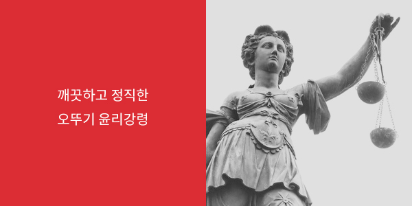

지속가능경영
- 윤리 경영
- (주)오뚜기는 윤리경영활동을 위하여 윤리강령을 규정하여 이를 바탕으로
건전한 윤리적 가치관을 확립하고 제반 법규와 기본 윤리를 준수합니다.
(주)오뚜기 윤리강령
(주) 오뚜기 임직원은 건전한 기업활동을 저해하는 모든 부조리와 허례허식을 철저히 배격하고 단절함으로써
깨끗하고 정직한 기업풍토 정착을 위해 아래의 윤리강령을 실천한다.

- 하나. 어떠한 명목으로도 이해관계자로부터 금품의 요구나 제공을 받지 않는다.
- 하나. 건전한 상식을 넘는 접대 및 향응을 받지 않는다.
- 하나. 이해관계자에게 금전적인 부담을 주는 편의제공(교통, 숙박 등)을 받지 않는다.
- 하나. 임직원의 경조사를 이해관계자에게 직,간접으로 알리거나 불가피하더라도 과도한 경조금을 받지 않는다.
- 하나. 이해관계자와 금전거래(금전대차, 보증, 부동산 임대차 등)를 하지 않는다.
- 하나. 업무 또는 사적인 행사에 이해관계자로부터 찬조금품, 편의제공 등을 받지 않는다.
- 하나. 거래업체로부터 부당한 지분을 취득하지 않는다.
- 하나. 회사의 예산 및 자산, 정보등을 부당하게 사용하지 않는다.
윤리강령 위반신고처
(주)오뚜기와 관련된 윤리강령 위반사항을 신고하여 주시면 신속히 처리하여 회신 드리며 신고자에 대한 비밀은 절대 보장해 드립니다.
신고사항은 전화, 메일, 서신, 직접 방문 등을 통해 접수하며 연락처는 아래와 같습니다.
- 윤리경영위원회
- 전화 02-2010-0741
- 이메일 ethic@ottogi.co.kr
- 서신 서울시 강남구 영동대로 308